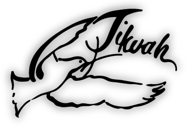
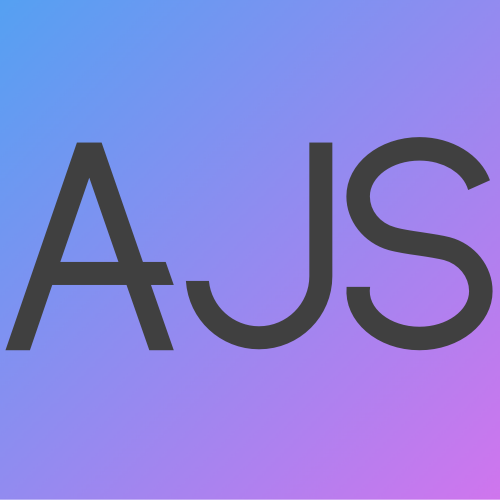

Projects
Between assignments for my classes and personal projects I choose to work on in my free time, I have worked on several
things I am proud to have created. Here are a few:
VUTC Website and Database Development
VUTC is an organization I am a part of, which works doing event production for other campus organizations at Villanova.
In order to facilitate all our operations, we have a website, which the VUTC Web Team writes, updates, and maintains.
The website allows clients to input event requests, facilitates planning of event details, allows staff to sign up
for events, and coordinates timesheets and pay. However, the I would describe the website as "funky", particularly
in that it was written without regard for best practices in coding. As such, we have decided to do a full-stack
re-design of the website. We will be designing and building a new database, populating it with previous data,
re-writing all the code for the website (including giving it a new look), and adding some new features. The new website
will be written using the Laravel PHP framework, and a MySQL database. For the front end, we are using the Bootstrap
templates Paper Kits and AdminLTE.
As of Fall 2020, the new website is estimated to be about a third of the way done. I started by working to design the
new database, which included making an ERD. The database currently has 33 tables, but more may be added as new
functionality is added. Next, I wrote migrations to create the database which had been designed, and then wrote
models corresponding to the various tables. As of the fall, the project has been split between various Web Team members.
Each member takes a section of the website, and works to write the controllers and views necessary for that section. I
have been working on the events section, and have finished the functionality for clients to request events, for staff
to view said events, and for most edits to event information to be made. I am currently working on the functionality to
generate quotes for events. I have currently written about 4,500 lines of code for the project.
In addition to my work on the new website, I have also worked on the existing legacy site, which can be found at
vutc.com. My projects have included creating an Events Dashboard,
which displays 12 key pieces of information about each event, allowing for easier management of multiple events at once.
In addition, I created a system of client profiles to allow events management staff to better keep track of the needs
of various clients, and a system to collect feedback from both clients and staff members. I have also made various
other minor updates, including checking and updating protection against SQL injection on various forms.

Tikvah Email Migration
In the fall of 2021, I took the course Systems Analysis and Design, which focused on analyzing and creating information
systems for businesses. The culmination of the course was a project in which groups of students worked to assist local
charitable organizations to update their existing information systems. I worked with a Philly-based group called Tikvah,
which advocates for and provides services to Jewish adults with mental illness.
The work I did for Tikvah involved migrating their email platform from Ionos to Google Workspace. This involved activating
Google Workspace, creating user accounts and adding basic information, creating DNS records, and training Tikvah staff
in the use of their Google Workspace accounts, both for day-to-day use and basic administration functions. I also
collaborated with Tikvah's external web developer, who worked with DNS record creation and worked to move existing emails
from Ionos to Gmail.
While I worked on the email migration portion of the project, my groupmates worked on various other improvements to
Tikvah's information systems, including creating a Salesforce domain for them and cleaning and importing data to
Salesforce. In addition, we all worked to research and implement a solution to integrate Gmail and otjer Google
Workspace apps into Salesforce.
About Tikvah
Used Textbook Sales App
In the spring of 2021, I took Mobile App Development, where I learned the basics of writing apps using React Native, which
involved making various apps, which were tested using Expo. The apps I made included a weather app and an app which gave you a
fact about the building on campus you were closest to. The culminating project for the class was a group project in which you
created an app, and my group chose to make an app to facilitate the swapping of used textbooks. The app used a Facebook
marketplace type model, where it served to connect intersted, buyers and sellers, but leaving price negotiation, payment,
and actually handing the book over to the users.
I took the lead within my group, first by teaching them to use GitHub as a way to share code- the recommended method was to
email files to each other. I contributed around 2,500 lines of code, which handled the core functions of creating an account,
updating account information, and chatting with other users.
The app would best be described as a prototype- we chose to focus on demonstrating basic functionality and considering systems
which would be most helpful to users, over front-end graphics.

My Website
This website was originally created as a personal project during the summer of 2019, while I was abroad interning at Better
Trader. The website is written entirely from scratch, with help from w3schools and StackOverflow, and a lot of
time working with a hex color picker and a css gradient maker. It is hosted through GitHub, and you can
view
the repository, which includes the current website, old versions, and some files that are me just playing
around.
The current site is the fourth version I have created. The
original version
of the site was fairly primitive and not written with best practices in mind, and was not at all mobile
responsive. The second
version was mobile responsive, but was boring to look at. The
third version
was created to be somewhat similar to the current site, with a background and white cards, but was never quite finished.
I intended to add functionality to have one card displayed on the first slide, but never got around to writing the
JavaScript. In addition, using an image as the background slowed down the loading of the site. Please note that none of
the old versions of the website have been kept up to date with recent information.
I created the current version of the site shortly after beginning to work on the Professional Identity project mentioned
below. The original design for that project was plain white with grey lines dividing sections, but I decided to do
something with some color, and I got the idea to do a gradient background with white cards, and I liked the style enough
that I decided to re-do the rest of my website in the same style.
My Professional Identity
This project was created for my Backpack to Briefcase professional development seminar during the middle of my
first semester sophomore year. It provides a snapshot of the ideas and ambitions I had at the time, and I have
chosen not to update it since.
My Professional Identity